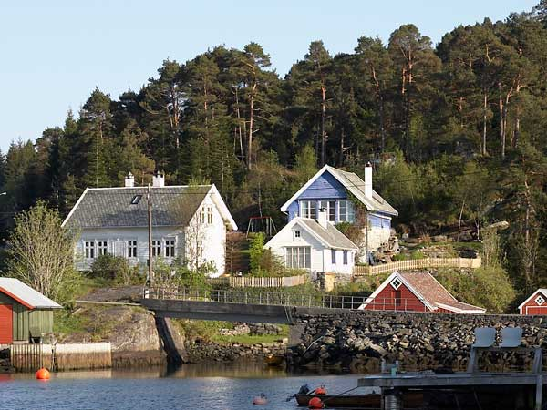

 You will not forget a stay in one of our two houses for rent in Hanevik. On the seafront is our "tun" - a yard surrounded by five traditional Norwegian west-coast houses. We are located half an hour by car from the buzz of Bergen and enjoy a calm atmosphere in nice and quiet surroundings. The beach is across the road, the woods can offer beautiful walks, and with our rowing boat you can enjoy the surroundings from the sea. We are open all year.
The Icehouse is available at Airbnb for short and longer stays, listed as Peaceful by the sea, next to Bergen
The Annex is available at Airbnb for short and longer stays, listed as Seafront refuge close to Bergen
Send us your message at annex@hanevik.no
Updated: